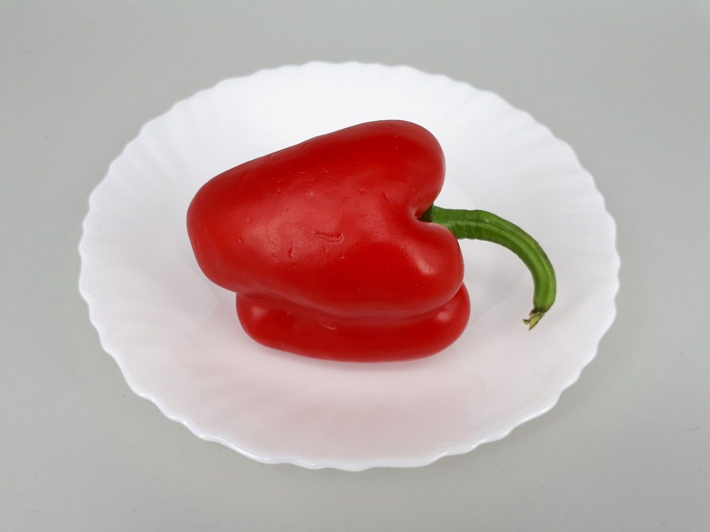

Window frame shadow on a curtain (Unsplash).jpg / Steinar Engeland steinart / CC0 1.0
MENU
野菜と、やさしい甘さ。
紹介記事やグルメサイトで、次のようなメニューが紹介されています(いずれも過去の掲載情報で、現在の提供内容は変わっている場合があります)。営業時間・価格・詳細は準備中です。

0811Potatoes, carrots and cabbage with fusilli in lemon grass casserole 02.jpg / Judgefloro / CC0 1.0

Fresh Carrots.jpg / Yerson Retamel / CC0 1.0

Confinement 2020 - modeste première récolte de radis.jpg / Benoît Prieur / CC0 1.0

Red bell pepper on a plate 2017 A.jpg / Fructibus / CC0 1.0

Hot chocolate (Unsplash).jpg / Alisa Anton alisaanton / CC0 1.0

Cup of tea isolated on white background - Petr Kratochvil.jpg / Petr Kratochvil / CC0 1.0

Mocha Cake - Djanogly Café, Tate Britain 2026-03-24.jpg / Andy Li / CC0 1.0

Chocolate financier.jpg / Syced / CC0 1.0
VOICE
こんなふうに過ごせたら。
以下は制作側が作った「イメージ例」です。実在のお客様の声ではありません。
イメージ例子どもを少し預けて、久しぶりにひとりでゆっくり。畳の部屋で野菜のお昼を食べたら、気持ちがほぐれました。
イメージ例古い家の窓から入る光が心地よく、時間がゆっくり流れる感じがしました。お茶をもう一杯ほしくなる空間です。
イメージ例野菜がたっぷりで、食後のデザートまでやさしい味。友人との待ち合わせにも使いたいと思いました。
ABOUT
家族への「ありがとう」から。
ママノキモチカフェは、2015年4月に市川市新田でオープンした、築年数の古い民家を生かしたカフェです。店名は、建物を提供してくれた家族への感謝に由来すると紹介されています。店の方からは「ママたちがゆっくりできる場所」というコンセプトがあると紹介され、11時30分以降は未就学児の入店ができない旨の案内も掲載されています。2019年9月にはリニューアルし、犬と過ごせる線路沿いのツリーハウスや小屋が新設されたと報じられました。
上記は市川の地域メディアやグルメサイトの過去記事に基づくもので、現在の内容とは異なる場合があります。最新情報は店舗にご確認ください。


ACCESS
ご案内
| 所在地 | 〒272-0035 千葉県市川市新田1丁目4−16 |
|---|---|
| 電話 | 準備中 |
| 営業時間・定休日 | 準備中 |
| @mamanokimochi_cafe |

Pasta alla Norma - Wiki Loves Sicilia.jpg / 8w9d / CC0 1.0